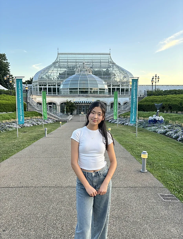
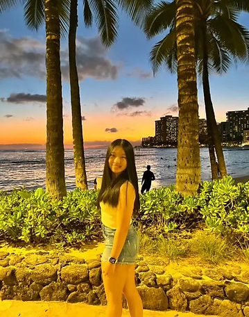

Iris Cao, Co-founder of Echo
Soft melodies, as lustrous iridescence, winding through the atmosphere; magnificent chords, as the rising sun, releasing rays of warmth; playful tunes, as mischievous faeries, lightening each thumping heart beat. Music is the amalgamation of a million different hopes, dreams, and experiences -- some grandiose and awing, others quaint and soothing. It is a universal language, a telepathic tool even, that can speak to millions with just a single note. It is a key for human relationships, joining us together in ways that may be never accomplished. It is a mirror to ourself, expressing our deepest desires, sorrows, and joys. Music is a magic meant to be enjoyed by all, which is why we wish to share it with the world.
Echo first began as small passion project created by Iris Cao and Catherine Hu, two highschoolers in Novi, MI. As long time music enjoyers and participants in the Novi Band Program, they have experienced the joys that music could bring and want to share it with more people.
In August 2024, Echo was officially launched as a youth organization dedicated to promoting musical passion. Since then, we have amassed a community of passionate high school tutors, hailing from all areas of the globe, practicing numerous mediums of music, all hoping to change the world in their own ways.

Catherine Hu, Co-founder of Echo